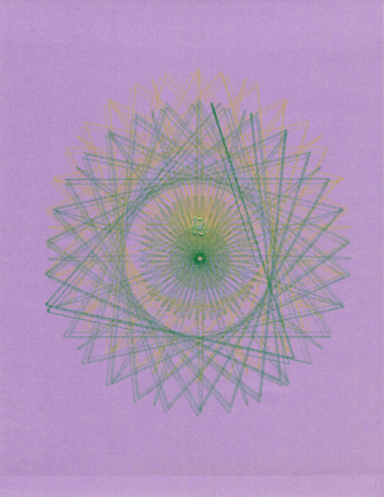
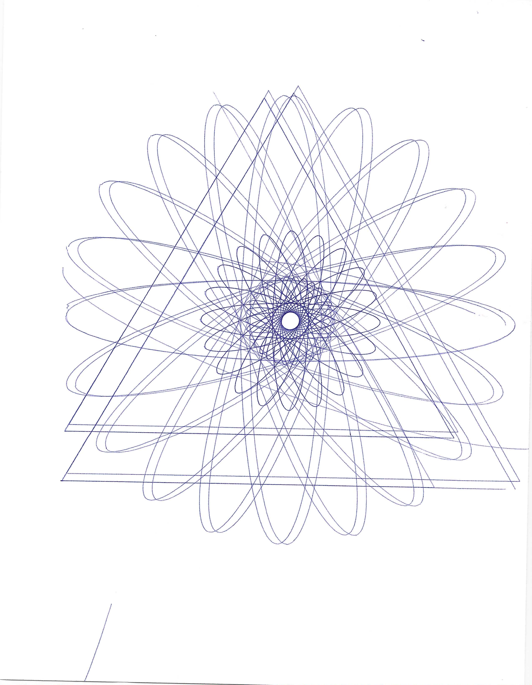
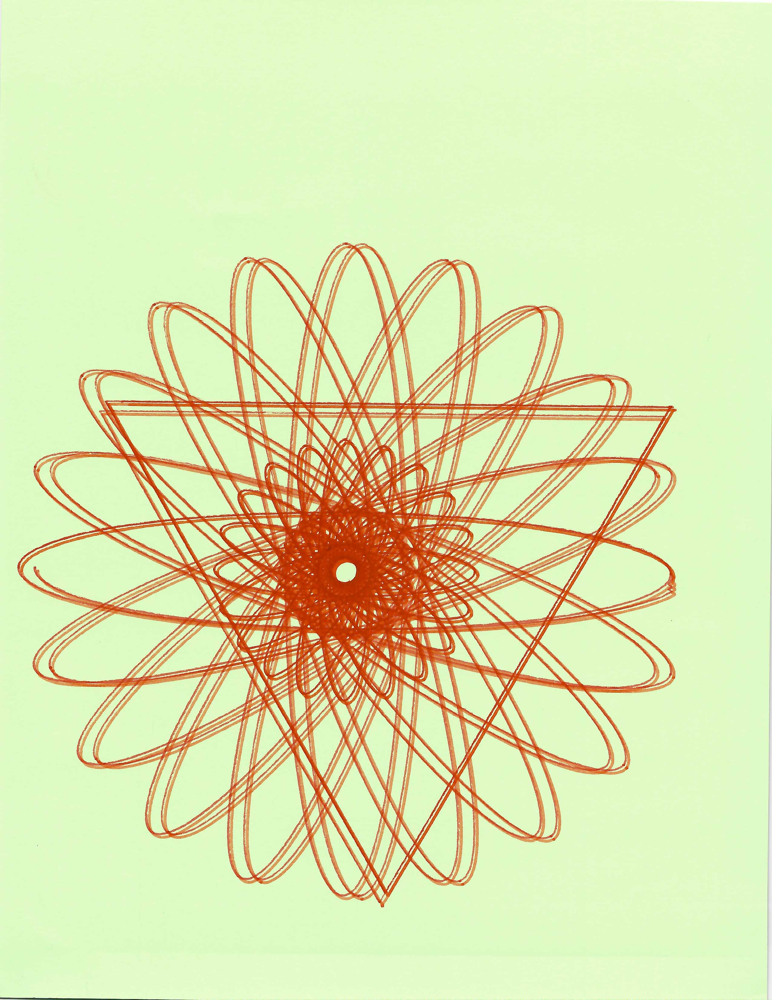

Inspired by movements, clicks and buttons roaming on the screen. Polar code exploding in lines with negative space surrounded at a focal point. How can you think geometrically without impairing your vision? Understanding how colors can merge through lines, segments and doodles. I created the code to keep on moving with every click from week 3 to mouse movements transferring through.


